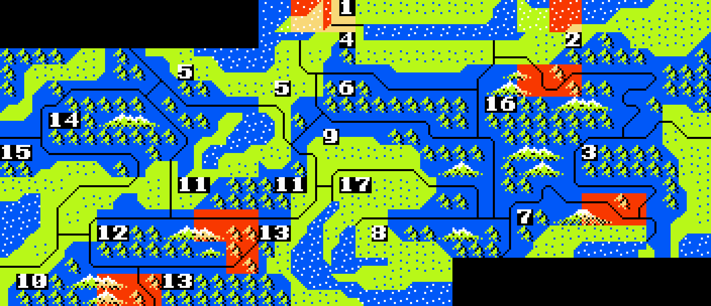

All daimyo
|
17-fief
Fiefs — 17-fief scenario (17)

1 Noto
Hatakeya
2 Echigo
Uesugi
3 Musashi
Hojo
4 Kaga
Honganji
5 Echizen
Asakura
6 Hida
Anekoji
7 Suruga
Imagawa
8 Mikawa
Tokugawa
9 Mino
Saito
10 Yamato
Tsutsui
11 Omi
Asai
12 Iga
Rokkaku
13 Iseshima
Kitabata
14 Yamashir
Ashikaga
15 Settsu
Miyoshi
16 Shinano
Takeda
17 Owari
Oda